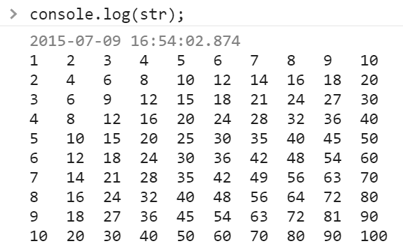

Таблица умножения
Ваша задача состоит из двух частей:
- Составить двумерную таблицу 10*10 и заполнить ее таблицей умножения от 1 до 10
- Вывести таблицу в консоль строчками
То есть, как вы поняли, я хочу чтобы таблица красиво смотрелась в консоли. Ровненько. Вот так, например:

Для этого вам придется конструировать строку. Используйте правильное количество пробелов для выравнивания, а также символ переноса строки \n
Место для решения - инлайновый тег <script> на этой странице